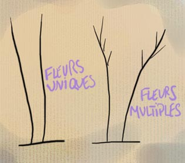

Pinceaux : les poils
|
Dire que le choix du poil est essentiel dans le choix d'un pinceau est une
évidence. Il ne s'agit pas seulement de propriétés mécaniques, d'adéquation
technique avec le style de peinture ou le support.
La dimension psychologique
est encore plus importante : dois-je utiliser l'animal ? Et lequel : l'animal de
boucherie, dont le poil est récupéré à l'abattoir ou chez les éleveurs,
l'animal à fourrure dont le poil est prélevé en pelleterie, l'animal
d'élevage, l'animal chassé ? Tout cela n'est pas anodin et l'information
s'avère rarement transparente au moment du choix, d'autant plus que les
changements climatiques mondiaux modifient certains facteurs comme par exemple
la longueur des poils des martres sibériennes.
Historiquement parlant, les premiers poils utilisés en Europe étaient vraisemblablement
la soie de porc (brosses rondes) et l'écureuil (pour les lavis). Selon certaines
sources (non confirmées), on employait un peu plus tard, au XVIIème, le blaireau, le
putois, le chien, le loup, le lièvre, l'écureuil, le chevreau et le porc.
Les pinceaux synthétiques n'ont apparu qu'aux alentours de 1975.
Le poil animal nécessite un important travail réalisé à la main
consistant
par exemple à tourner tous les poils dans le même sens ou à disposer sélectivement
les poils dans un "moule" permettant de donner une forme à
l'ensemble.
|
Sommaire
Conditionnement, usure,
coût
Détournement
Conservation, longévité
La fleur
Variétés
de poils
La fleur
Le
synthétique
Le poil animal
La
soie de porc
La
martre
La
mangouste
Le
putois
Le
blaireau
La
zibeline, en anglais "sable"
Le
petit-gris
La
chèvre
L'oreille
de boeuf
Le
poney
Autres types de poils
Le
chiendent
Le
métal |
Conditionnement, usure,
coût
La plupart des pinceaux sont "gommés" (enduits d'une espèce de
colle) afin de maintenir leur forme durant leur stockage et leur présentation
en magasin.
Beaucoup de peintres aquarellistes s'initiant à la peinture à
l'huile ou acrylique sur toile sont surpris de constater à quel point les poils s'usent vite
et mettent en cause à tort la qualité de leurs pinceaux. La friction sur
la toile est infiniment plus importante que sur le papier, les dimensions ne sont
pas les mêmes et les brosses doivent être remplacées plus souvent.
(en complément, voir
passage in courrier des
lecteurs)
Concernant le coût indépendamment de
l'usure et même du type de poils, ce qui le détermine fondamentalement, c'est la longueur de sa sortie et sa réserve
(impliquant une quantité plus ou moins importante de poils
"rares" et un assemblage
plus ou moins compliqué).
Détournement
De nombreux pinceaux destinés normalement à l'aquarelle peuvent être utilisés pour la
gouache, voire même en peinture à l'huile (martre). Des pinceaux en synthétique
destinés à l'acrylique peuvent parfaitement être employés pour la peinture
à l'huile. Le détournement ne pose pas de problèmes sauf dans deux cas :
* le petit-gris doit vraiment être réservé aux
peintures de type gouaches et lavis car il est beaucoup trop mou pour être
utilisé pour l'huile et l'acrylique
* certaines peintures dites "à
solvants" nécessitent l'emploi de pinceaux supportant les produits
agressifs. Il s'agit souvent de poils synthétiques.
Le détournement nécessite cependant un nettoyage
particulièrement doux et attentionné. Éviter les produits aromatiques.
Conservation, longévité
Se procurer des pinceaux de bonne qualité est une chose, les garder en bon
état en est une autre. La conservation dépend avant tout
* de la qualité du nettoyage (lire l'article
qui lui est consacré)
* du stockage pendant la séance de peinture. Les
séchoirs à pinceaux
permettent d'éviter l'écrasement des
poils au fond d'un pot.
Variétés
de poils
La fleur
Une première manière de catégoriser les poils des pinceaux est de les
distinguer par leurs types de fleurs :

Nous verrons au fil de ce texte que cette distinction s'avère
importante dans l'usage concret.
Le synthétique
Généralement composé de polyamide, il est et
n'est pas une catégorie à part : il peut atteindre un haut degré de finesse et
de souplesse ou de résistance vraiment comparable au poil animal, mais sa réserve
est généralement bien inférieure. Son
insensibilité à l'eau en fait un bon pinceau pour les procédés
aqueux, mais de manière non exhaustive : certaines variétés résistent très
bien à l'action de dissolvants agressifs et la plupart tolèrent fort bien la
peinture à l'huile et son solvant, l'essence. Généralement,
l'offre des fabricants se subdivise en deux parties :
* pinceaux d'usage artistique normal :
acrylique, huile. Lorsqu'un poil est censé être destiné à l'acrylique,
son usage en peinture à l'huile n'est généralement pas impossible.
* pinceaux destinés aux "peintures à solvants",
plus agressives. Ceux-là peuvent évidemment être employés aussi avec des
peintures moins agressives. Généralement, ils sont plus solides et peuvent être
utilisés avantageusement par des peintres ayant coutume de malmener leurs
pinceaux.
De coût très modéré et de bon rapport qualité-prix, le synthétique a autorisé les
fabricants à créer des queues de morue
et spalters à poils
très fins, autorisant l'artiste à appliquer glacis, laques
et vernis sans qu'apparaisse la trace,
l'empreinte des
poils (contrairement à ce qui se produit presque immanquablement avec la soie de porc).
Il existe d'excellents pinceaux, mélanges de martre et de
synthétique. Ce compromis est financièrement très intéressant et peut être
de bonne qualité.
Le poil
animal
Des questions se posent forcément.
Concernant certains poils, le fournisseur est l'abattoir. Pour d'autres par
contre, les conditions dans lesquelles l'animal est élevé, chassé et tué - s'il est
élevé, chassé et tué -
soulèvent naturellement des interrogations tout à fait comparables à celles que suscite
l'industrie de la fourrure vestimentaire.
Qu'en est-il exactement du respect de l'animal, voilà une question a priori légitime
pour l'artiste, l'amateur, l'acheteur de pinceaux. N'y aurait-il pas lieu, pour
les fabricants de pinceaux, de communiquer davantage, le plus possible à ce
sujet ?
Sans mettre de côté ces questionnements, faisons un petit tour d'horizon des
différents poils animaux utilisés dans la fabrication des pinceaux.
La soie de porc
Ce n'est pas un poil fin. Contrairement aux autres, il a de multiples fleurs.
Sa résistance et sa rigidité en font de bons pinceaux pour de nombreux usages,
tant en préparation de surfaces que pour la peinture proprement dite. Sa
couleur est blanche.
Généralement, les fabricants proposent trois qualités de soie de porc.
Toutes sont cuites dans l'eau bouillante durant deux heures pour
assouplissement. Elles sont :
* la
qualité basique (type demi-blanc), en provenance d'Europe. Son défaut : le poil est trop gros pour être vraiment
bien enserré par la virole. Le pinceau perd donc des poils.
* la qualité moyenne (type beau-blanc), venant de Chine et d'Europe
centrale. Ce type de pinceaux perd quelques poils.
* l' extra-fine (type beau-blanc de Tchounking), faite de poils
d'origine sélectionnée venant souvent de Chine. Le manche est souvent
vernis.
Seul l'extra-fine est susceptible de ne pas trop perdre de poils.
On nous signale une pratique d'une
efficacité non certifiée permettant théoriquement d'évacuer les poils mal
fixés. Cela consiste à placer le pinceau dans l'eau bouillante une vingtaine
de minutes. Au sortir de l'eau, essorer et nettoyer au savon.
La martre
Il existe deux sortes (au moins) de martres :
* la martre rouge Kolinsky, donnant un poil
particulièrement résistant, de couleur plus jaune que rouge, de très
haute tenue. Bien assemblés, les poils ne s'écrasent pas et reprennent
toujours leur forme. Pour cette raison, ils sont le plus souvent assemblés en forme ronde
pointue et très rarement en forme plate.
A notre connaissance, les Kolinsky à sortie courte sont les pinceaux les plus
précis. Les autres variétés sont plus ou moins longues (jusqu'à
la taille "traceur") et plus
ou moins ventrues.
Ce type de poils coûte vraiment cher (proche du prix de l'or au poids), mais peut faire un long usage.
Pourquoi ce terme "Kolinsky" ? Possiblement parce que les martres de cette
variété vivaient originellement sur la presqu'île de Kola. Ceci aurait plusieurs
implications :
* "Kolinsky" ne serait pas un nom propre mais un
simple adjectif auquel il n'y aurait pas lieu de mettre une majuscule.
Information non confirmée. Amis russophones, n'hésitez pas à
nous écrire.
* contrairement à ce qui est fréquemment annoncé
par les fabricants, il ne s'agirait pas - du moins à l'origine - d'une martre
sibérienne. La presqu'île de Kola est en effet partie intégrante de la péninsule
scandinave. Elle jouxte directement la Finlande, à des milliers de kilomètres à
l'Ouest de l'Oural. Quels sont les lieux d'implantation actuels ?
Toute information fiable est bienvenue.
* si certaines martres Kolinsky étaient encore
chassées dans cette région de nos jours, il faudrait rappeler que celle-ci est
très surveillée (par la Finlande et la Norvège qui contrôlent notamment la
radioactivité des animaux sauvages terrestres) suite aux essais nucléaires
atmosphériques de l'ère soviétique, mais aussi à cause de la présence d'un stock
de déchets fissiles qui pourrait être le plus important au monde et à l'ancrage
ou à l'échouage de sous-marins et brise-glace appartenant à une flotte atomique
sans équivalent mondial. La transparence de l'état russe sur ces sujets
extrêmement polémiques ne semble toujours pas faire l'unanimité.
* par ailleurs, cheveux et poils ont une tendance
particulièrement marquée à concentrer les minéraux et notamment les métaux
lourds.
...aussi les fabricants de pinceaux pourraient-ils avoir intérêt à communiquer
sur ces points : lieu d'origine de l'animal et contrôle de l'innocuité du
produit vendu.
* la "martre rouge", non désignée
"Kolinsky". Son poil est bien roux et se distingue effectivement. Il est plus souple que celui de
la martre Kolinsky. A peine moins cher, il est parfois monté en
forme plate. Son origine précise suscite questionnement.
Toute information fiable à ce sujet est bienvenue.
Les martres sont apparentées au vison et à la mangouste. Leurs poils autorisent
un travail d'application de grande précision. De bonne qualité, ils ont du
"ressort", c'est-à-dire une capacité particulière à retrouver leur
forme originelle.
Certains
fabricants proposeraient des pinceaux à poils de martre de Chine ou de weasel (visel)
de qualité inférieure.
La mangouste
C'est un très beau poil lisse présentant des nuances sombres et claires.
L'animal est généralement une mangouste indienne.
Monté à plat ou en rond, présentant une souplesse moyenne, ce poil est de
prix raisonnable.
Le putois
C'est un poil plutôt fin, assez dur et court. Le plus souvent, il est monté
à plat.
L'animal provient généralement d'Europe centrale (notamment l'Allemagne) ou
de Russie.
Le terme de putois désigne aussi un type de brosses destinées à la
peinture décorative.
Voir aussi putoiser.

Le blaireau
D'origine française ou européenne, son poil est assez dur. Utilisé en
peinture à l'huile et acrylique ainsi qu'en peinture décorative (notamment
pour le vitrail). Voir photo ci-contre.
Voir aussi blaireauter.
La
zibeline (en anglais, "sable")
Il n'est pas très facile de s'en procurer en France. Son prix est très
élevé.
Il s'agit, nous dit-on, d'un poil doux et souple tout à fait remarquable,
recherché par certains peintres.
Il peut être utilisé en peinture à l'huile ainsi qu'un peu toutes les
peintures, à la condition, comme toujours, d'un nettoyage attentif.
Le petit-gris
Destiné exclusivement aux peintures à l'eau non empâtées -
l'aquarelle particulièrement, mais aussi les
lavis -, c'est le poil
le plus souple et aussi celui dont la réserve est
la plus importante : il est semble-t-il le plus fin et offre de ce fait une
capillarité inégalable. De même, la pointe est d'une finesse extrême si le
pinceau est bien assemblé.
Ce poil provient de la queue de l'écureuil. L'origine de l'animal
peut être
* la Russie (trois variétés très réputées) :
* petit-gris brun de Kazan assez précis
(contours, détails, coloriage), monté en rond à pointe fine,
* variété bleue de
Saccamina à très grande réserve
* variété longue et dure de Talaoutky ;
* l'Espagne, la France et la Scandinavie
(variété rouge très molle)
* le Canada (variété dorée, courte et molle,
ayant une bonne réserve, souvent montée sur virole plate et de forme carrée
pour faciliter le travail des fonds et les traits exécutés par la tranche).
Généralement, ce poil est sombre.
Il est le plus souvent assemblé en forme ronde (mouilleur)
ou en rond pointu. Le mouilleur
est aussi pointu que le rond pointu mais sa sortie est proportionnellement plus
longue, ce qui signifie concrètement que le tracé fin est plus difficultueux -
mais pas irréalisable. Par contre, sa réserve est extraordinaire.
On le trouve plus rarement en plat extrêmement fin carré (plat
court) ou ovale (mouilleur
ovale, dit aussi langue de chat
- une forme qui, mouillée, fait aussi la pointe).
Son prix
augmente très sensiblement en fonction de la longueur de sa sortie.
Pour des raisons de coût, le petit-gris est parfois associé au poil de
poney (lorsqu'il est monté en forme de mouilleur particulièrement). Dans ce cas, il ne fait
plus la pointe. C'est à cela que l'on peut aisément
reconnaître les composites de ce type.
La chèvre
Elle donne un poil blanc, le plus souvent assemblé sous forme ronde pointue
en ce qui concerne l'usage artistique, dédié à certaines calligraphies
asiatiques. Il existe également des pinceaux destinés au maquillage. Le poil
de chèvre est peu coûteux ou du moins devrait l'être. Avec les assemblages
habituels, la perte de poils en grand nombre est courante. L'alibi de l'exotisme
ne devrait certainement pas autoriser la pratique de prix élevés que l'on
constate malheureusement en France.
L'oreille
de boeuf
Ce poil provient du fond de l'oreille du boeuf. Sa couleur peut varier
considérablement indépendamment de sa qualité. Nous n'avons pas beaucoup
d'échos le concernant. Il serait résistant, nerveux et peu coûteux.
Le poney
On l'appelle aussi "chameau". En réalité, il provient du poney ou
du cheval. En Chine, il n'a été utilisé que pour l'écriture.
Apparemment semblable au petit-gris, il n'a
vraiment pas la qualité de ce dernier. Il
ne fait pas la pointe. Il a cependant une réserve
relativement
importante et est pour cette raison employé dans la fabrication de brosses à chiqueter.
Autres types de poils
Le
chiendent
Eh oui ! Ne l'oublions pas. Le poil d'un vulgaire balai-brosse peut être
utile par exemple pour les techniques mouchetées,
sur de vastes surfaces.
Le
métal
Les brosses métalliques sont très utilisées en ébénisterie et dans
quelques autres domaines des arts décoratifs. Différents métaux sont
disponibles.
Elles peuvent intéresser l'artiste dans le cadre de la préparation de
certains supports qu'elles permettent de nettoyer. Autre emploi : des stries
peuvent être imprimées à l'aide de cet outil sur un support tendre ou frais.
Retour
début de page